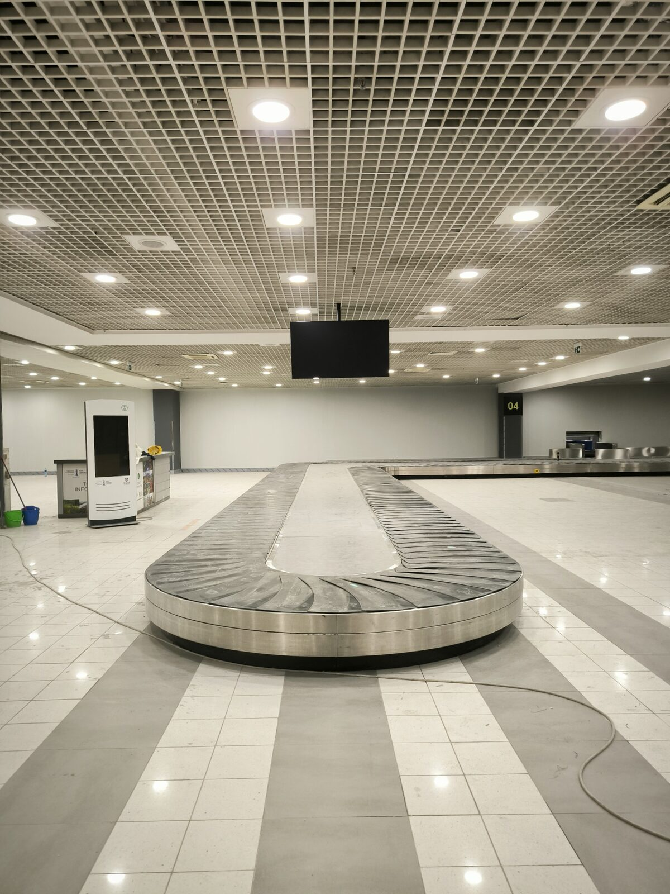

TV i signage ekrani
Instalacija ekrana za prikaz informacija i sadržaja u zoni dolazaka i preuzimanja prtljaga.

Instalacija TV i digital signage ekrana u okviru terminala Aerodroma Nikola Tesla, sa fokusom na preciznu montažu, integraciju sa postojećom infrastrukturom i pouzdan prikaz informacija u prostoru visokog protoka.

Aerodromski terminal zahteva sisteme koji funkcionišu pouzdano, pregledno i bez ometanja svakodnevnog rada objekta. TV i digital signage ekrani moraju biti pravilno pozicionirani, povezani i integrisani tako da informacije budu vidljive i dostupne korisnicima prostora.
U okviru realizacije izvedena je instalacija ekrana u zoni dolazaka i preuzimanja prtljaga, uz usklađivanje sa postojećom infrastrukturom objekta i rad u uslovima u kojima su preciznost, koordinacija i pouzdanost posebno važni.
Rešenje je obuhvatilo montažu, povezivanje i pripremu ekrana za pouzdan rad u javnom prostoru terminala.
Instalacija ekrana za prikaz informacija i sadržaja u zoni dolazaka i preuzimanja prtljaga.
Tehnička priprema, povezivanje i provera ekrana u skladu sa infrastrukturom i zahtevima prostora.
Realizacija u zahtevnom javnom okruženju, uz koordinaciju radova i pažljivo uklapanje u postojeće sisteme terminala.
Timelapse prikazuje proces montaže i pripreme ekrana u aerodromskom terminalu.
Ekrani su implementirani kao deo funkcionalne i pregledne signalizacije u prostoru terminala.


Implementirano rešenje omogućava pouzdan prikaz informacija i sadržaja u zonama kroz koje svakodnevno prolazi veliki broj putnika, uz urednu integraciju ekrana sa postojećom infrastrukturom aerodroma.